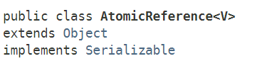

AtomicReference，顾名思义，就是以原子方式更新对象引用。
可以看到，AtomicReference持有一个对象的引用——value，并通过Unsafe类来操作该引用:
为什么需要AtomicReference？难道多个线程同时对一个引用变量赋值也会出现并发问题？
引用变量的赋值本身没有并发问题，也就是说对于引用变量var ，类似下面的赋值操作本身就是原子操作:Foo var = ... ;
AtomicReference的引入是为了可以用一种类似乐观锁的方式操作共享资源，在某些情景下以提升性能。
我们知道，当多个线程同时访问共享资源时，一般需要以加锁的方式控制并发：
volatile Foo sharedValue = value;
Lock lock = new ReentrantLock();
lock.lock();
try{
// 操作共享资源sharedValue
}
finally{
lock.unlock();
}
上述访问方式其实是一种对共享资源加悲观锁的访问方式。
而AtomicReference提供了以无锁方式访问共享资源的能力，看看如何通过AtomicReference保证线程安全，来看个具体的例子：
public class AtomicRefTest {
public static void main(String[] args) throws InterruptedException {
AtomicReference<Integer> ref = new AtomicReference<>(new Integer(1000));
List<Thread> list = new ArrayList<>();
for (int i = 0; i < 1000; i++) {
Thread t = new Thread(new Task(ref), "Thread-" + i);
list.add(t);
t.start();
}
for (Thread t : list) {
t.join();
}
System.out.println(ref.get()); // 打印2000
}
}
class Task implements Runnable {
private AtomicReference<Integer> ref;
Task(AtomicReference<Integer> ref) {
this.ref = ref;
}
@Override
public void run() {
for (; ; ) { //自旋操作
Integer oldV = ref.get();
if (ref.compareAndSet(oldV, oldV + 1)) // CAS操作
break;
}
}
}
上述示例，最终打印“2000”。
该示例并没有使用锁，而是使用自旋+CAS的无锁操作保证共享变量的线程安全。1000个线程，每个线程对金额增加1，最终结果为2000，如果线程不安全，最终结果应该会小于2000。
通过示例，可以总结出AtomicReference的一般使用模式如下：
AtomicReference<Object> ref = new AtomicReference<>(new Object());
Object oldCache = ref.get();
// 对缓存oldCache做一些操作
Object newCache = someFunctionOfOld(oldCache);
// 如果期间没有其它线程改变了缓存值，则更新
boolean success = ref.compareAndSet(oldCache , newCache);
上面的代码模板就是AtomicReference的常见使用方式，看下compareAndSet方法：
该方法会将入参的expect变量所指向的对象和AtomicReference中的引用对象进行比较，如果两者指向同一个对象，则将AtomicReference中的引用对象重新置为update，修改成功返回true，失败则返回false。也就是说，AtomicReference其实是比较对象的引用。

CAS操作可能存在ABA的问题，就是说：
假如一个值原来是A，变成了B，又变成了A，那么CAS检查时会发现它的值没有发生变化，但是实际上却变化了。
一般来讲这并不是什么问题，比如数值运算，线程其实根本不关心变量中途如何变化，只要最终的状态和预期值一样即可。
但是，有些操作会依赖于对象的变化过程，此时的解决思路一般就是使用版本号。在变量前面追加上版本号，每次变量更新的时候把版本号加一，那么A－B－A 就会变成1A - 2B - 3A。
AtomicStampedReference就是上面所说的加了版本号的AtomicReference。
先来看下如何构造一个AtomicStampedReference对象，AtomicStampedReference只有一个构造器：
可以看到，除了传入一个初始的引用变量initialRef外，还有一个initialStamp变量，initialStamp其实就是版本号（或者说时间戳），用来唯一标识引用变量。
在构造器内部，实例化了一个Pair对象，Pair对象记录了对象引用和时间戳信息，采用int作为时间戳，实际使用的时候，要保证时间戳唯一（一般做成自增的），如果时间戳如果重复，还会出现ABA的问题。
AtomicStampedReference的所有方法，其实就是Unsafe类针对这个Pair对象的操作。
和AtomicReference相比，AtomicStampedReference中的每个引用变量都带上了pair.stamp这个版本号，这样就可以解决CAS中的ABA问题了。
来看下AtomicStampedReference的使用：
AtomicStampedReference<Foo> asr = new AtomicStampedReference<>(null,0); // 创建AtomicStampedReference对象，持有Foo对象的引用，初始为null，版本为0
int[] stamp=new int[1];
Foo oldRef = asr.get(stamp); // 调用get方法获取引用对象和对应的版本号
int oldStamp=stamp[0]; // stamp[0]保存版本号
asr.compareAndSet(oldRef, null, oldStamp, oldStamp + 1) //尝试以CAS方式更新引用对象，并将版本号+1
上述模板就是AtomicStampedReference的一般使用方式，注意下compareAndSet方法：
我们知道，AtomicStampedReference内部保存了一个pair对象，该方法的逻辑如下：
但这里有段优化逻辑，就是如果 newReference == current.reference && newStamp == current.stamp，说明用户修改的新值和AtomicStampedReference中目前持有的值完全一致，那么其实不需要修改，直接返回true即可。
我们在讲ABA问题的时候，引入了AtomicStampedReference。
AtomicStampedReference可以给引用加上版本号，追踪引用的整个变化过程，如：
A -> B -> C -> D - > A，通过AtomicStampedReference，我们可以知道，引用变量中途被更改了3次。
但是，有时候，我们并不关心引用变量更改了几次，只是单纯的关心是否更改过，所以就有了AtomicMarkableReference：
可以看到，AtomicMarkableReference的唯一区别就是不再用int标识引用，而是使用boolean变量——表示引用变量是否被更改过。
从语义上讲，AtomicMarkableReference对于那些不关心引用变化过程，只关心引用变量是否变化过的应用会更加友好。